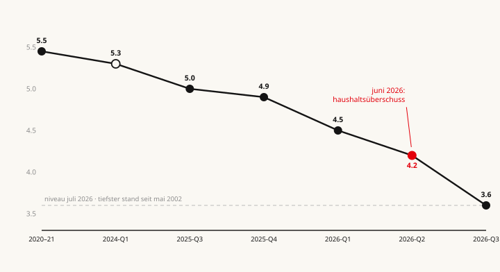
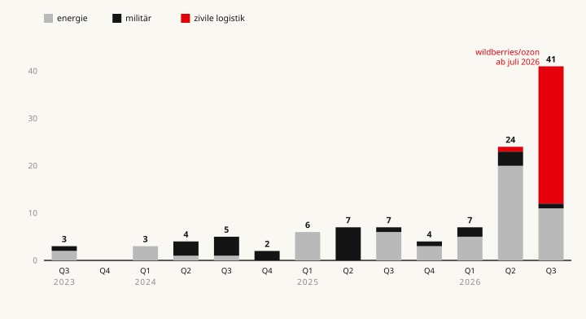

Nachhaltiger Schaden entsteht nicht durch den einzelnen Treffer, sondern dort, wo die Reparatur länger dauert als das Intervall bis zum nächsten — und diese Logik hat sich 2026 von der Energie auf die zivile Wirtschaft verlagert.
Im Juni 2026 verbuchte der russische Staatshaushalt einen Überschuss von 279 Milliarden Rubel.1 Im selben Monat lief der Durchsatz der russischen Raffinerien auf den tiefsten Stand seit 2002 zu, und in mehr als der Hälfte aller Regionen wurde Benzin rationiert. Beide Meldungen stimmen. Wer verstehen will, was die ukrainischen Drohnen der russischen Wirtschaft wirklich antun, muss also zuerst erklären, wie diese beiden Sätze gleichzeitig wahr sein können. Die Antwort führt weg von den Schlagzeilen über brennende Raffinerien und hin zu einer unscheinbaren Größe: der Zeit, die eine Reparatur braucht.
1ein überschuss und ein kollaps
Der Überschuss war echt, und er hatte nichts mit militärischer Stärke zu tun. Er kam vom Ölpreis. Als im Juni 2026 der Krieg zwischen Israel und Iran die Straße von Hormus bedrohte, sprang der Preis für russisches Öl nach oben, und der Kreml verdiente an jedem Fass mehr, obwohl er weniger Fässer verarbeiten konnte. Die Einnahmen aus Öl und Gas sprangen um 38 Prozent gegenüber dem Vorjahr. Ein Preisschock von außen deckte für ein paar Wochen zu, was im Inneren zerbrach.
Denn im Inneren zerbrach einiges. Im Juli 2026 verarbeiteten Russlands Raffinerien rund 3,6 Millionen Barrel am Tag — der niedrigste Stand seit Mai 2002 und etwa ein Drittel unter dem, was zu dieser Jahreszeit normal wäre.2 Benzin wurde in 56 der 83 Regionen rationiert, auf der besetzten Krim wurde der Verkauf an Zivilisten zeitweise ganz eingestellt, und selbst an Moskauer Tankstellen galten im August wieder Obergrenzen. Ein Land, das gleichzeitig Rekordeinnahmen und Benzinmarken meldet, hat kein Bilanzproblem. Es hat ein Mengenproblem, das die Bilanz noch nicht erreicht hat.

Diese Analyse zählt nur, was sich belegen lässt. Jeder Angriff, der hier auftaucht, ist nach drei Achsen sortiert: nach Schwere (trifft er nationale Produktionskapazität, kostet er mehr als eine kleine dreistellige Millionensumme, vernichtet er militärisches Gerät, hat er symbolische Reichweite), nach Dauer (Ausfall über drei Monate, über ein Jahr, oder irreparabel) und nach Beweiskraft (Satellitenbild und Industriequelle; ukrainische Angabe mit teilweiser Bestätigung; oder ukrainische Angabe allein). Die Trennung ist nicht Pedanterie. Sie ist der Unterschied zwischen einer nachprüfbaren Aussage und einer Kriegsmeldung. Wo die Beweiskraft dünn ist, steht es im Text.
2was kaputt ist und kaputt bleibt
Beginnen wir mit dem, was endgültig ist, denn es ist überraschend wenig. Wirklich irreparabler Schaden — die härteste Kategorie, der Verlust, den keine Reparatur zurückholt — ist in dieser ganzen Kampagne fast ausschließlich militärisch.
Am 1. Juni 2025 schleuste der ukrainische Geheimdienst 117 Drohnen in Lastwagen tief nach Russland und ließ sie neben strategischen Bomberbasen aus den Dächern steigen, bis hin zum Flugplatz Belaja in Sibirien, mehr als 4.000 Kilometer von der Grenze entfernt. Kyjiw sprach von 41 getroffenen Flugzeugen; unabhängige Auswertungen von Satellitenbildern kamen auf zehn bis dreizehn zerstörte Maschinen.3 Der Unterschied ist groß, und man sollte die kleinere, belegte Zahl nehmen. Aber selbst sie genügt, denn die getroffenen Typen — die Tu-95 und die Tu-22M3 — werden seit Jahrzehnten nicht mehr gebaut. Was hier verbrannte, kann Russland nicht ersetzen, nur vermissen. Ein halbes Jahr zuvor, im September 2024, ließ eine Serie von Drohnen das Munitionsarsenal bei Toropez detonieren; die estnische Aufklärung schätzte die vernichtete Menge auf rund 30.000 Tonnen, was zwei bis drei Monaten Frontverbrauch entspricht.4
Daneben stehen Verluste, die zwar schmerzen, aber ersetzbar sind. Als im Juni 2025 auf dem Flugplatz Marinowka zwei Su-34 zerstört wurden, war das ein Verlust von vielleicht siebzig bis hundert Millionen Dollar — aber die Su-34 läuft in Produktion. Solche Treffer sind stille Verluste: teuer, endgültig für das einzelne Gerät, aber ohne Wirkung, die über den Flugplatzzaun hinausreicht. Sie schwächen die russische Luftwaffe. Die russische Volkswirtschaft spüren sie nicht.
3was nie kaputtgeht und trotzdem ausfällt
Der eigentliche wirtschaftliche Schaden funktioniert nach einer anderen Logik, und sie ist zunächst kontraintuitiv. Keine einzige große russische Raffinerie ist zerstört. Man kann eine Raffinerie kaum zerstören; sie ist zu groß, zu redundant, zu reparaturfähig. Ein Drohnentreffer legt eine Destillationskolonne für zwei bis acht Wochen lahm, dann läuft sie wieder. Und trotzdem lag im Sommer 2026 ein Viertel der Verarbeitungskapazität still.
Die Auflösung liegt nicht in der Wucht des einzelnen Treffers, sondern im Takt. Wenn eine Anlage getroffen wird, bevor die Reparatur des letzten Treffers abgeschlossen ist, dann summieren sich Wochenausfälle zu Monaten. Die Raffinerie Kirischi bei Sankt Petersburg, die zweitgrößte des Landes, ist seit dem 5. Mai 2026 vollständig außer Betrieb — nicht wegen eines katastrophalen Schlags, sondern weil auf jeden Reparaturversuch der nächste Treffer folgte. Ende August 2026 waren erstmals alle großen Raffinerien des Lukoil-Konzerns gleichzeitig offline. Nicht eine war zerstört. Alle waren getroffen.
Zwei Umstände verlängern den Takt zusätzlich. Erstens hat die Ukraine im Laufe des Jahres 2026 ihre Zielauswahl verändert, weg von der Fläche und hin zu den schwer ersetzbaren Kernbauteilen — den Destillationstürmen, deren Nachbau Spezialkomponenten braucht. Zweitens sind genau diese Komponenten sanktioniert. Eine russische Raffinerie kann eine beschädigte Kolonne nicht mehr einfach im Westen bestellen. Der Energieökonom Sergej Wakulenko hat den Mechanismus präzise beschrieben: Es ist der Wettlauf zwischen der Drohne und dem Reparaturteam, und die Sanktionen halten das Reparaturteam auf.5 Das ist der Kern des nachhaltigen Schadens im Energiesektor: nicht ein Bestand, der vernichtet wäre, sondern ein Fluss, der nie wieder ganz anläuft.
4der schwenk auf den alltag
Bis zum Sommer 2026 ließ sich all das noch als Krieg gegen Putins Kriegskasse lesen: Raffinerien, Exportterminals, Pipelines — Ziele, die den Staat treffen, nicht den Bürger. Am 18. Juli 2026 endete diese Lesart. An diesem Tag begann eine systematische Serie von Angriffen auf die Lagerzentren von Wildberries, dem mit Abstand größten Onlinehändler Russlands, dem russischen Amazon.
Die Zahlen haben die Größenordnung der Raffineriekampagne. Innerhalb weniger Wochen wurden 23 Standorte getroffen, mindestens vierzehn brannten aus; acht der zehn größten Verteilzentren fielen aus, zusammen mehr als vier Fünftel ihrer Fläche. Das Zentrum in Elektrostal, eine Viertelmillion Quadratmeter, brannte vollständig nieder. Der Warenverlust wird auf rund 480 Milliarden Rubel geschätzt, etwa 5,7 Milliarden Dollar — mit der üblichen Vorsicht bei frühen Schätzungen.6 Kurz darauf, ab dem 22. August, traf es Ozon, den zweitgrößten Marktplatz. Die Attribution ist in beiden Fällen eindeutig: Das ukrainische Verteidigungsministerium bekennt sich offen, der Gouverneur der Region Moskau bestätigte die Treffer, Putin kündigte Staatshilfe an.
Man kann die Sequenz der ganzen Kampagne als eine Treppe lesen, auf der jede Stufe eine breitere Gruppe von Menschen erreicht. Munitionsdepots treffen die Front. Bomberbasen treffen die Luftwaffe. Raffinerien treffen die Staatskasse und, über die Rationierung, den Autofahrer. Exportterminals treffen die Handelsbilanz. Und die Lager von Wildberries treffen das Paket, das der Bürger bestellt hat. Zum ersten Mal steht am Ziel nicht mehr der russische Export, sondern der russische Alltag.

5woran man nachhaltigen schaden erkennt
Damit lässt sich das Paradox vom Anfang auflösen. Es war nie ein Widerspruch, sondern eine Frage des richtigen Messinstruments. Wer den Schaden am Haushalt oder am Bruttoinlandsprodukt ablesen will, misst zur falschen Zeit am falschen Ort: Diese Größen hängen am Ölpreis, und der Ölpreis wird in Hormus gemacht, nicht in den russischen Raffinerien. Der Juni-Überschuss ist der Beweis. Bilanzen lügen in diesem Krieg, nicht aus Absicht, sondern aus Konstruktion.
Das Verhalten lügt nicht. Nachhaltigen Schaden erkennt man nicht daran, dass eine Anlage brennt, sondern daran, dass Menschen und Unternehmen ihr Verhalten ändern — denn diese Anpassung bleibt bestehen, auch wenn die Anlage längst repariert ist. Und diese Signale sind bereits sichtbar. Auf der wichtigsten Inlandsflugstrecke, Moskau–Sankt Petersburg, fiel die Zahl der Flugpassagiere im ersten Halbjahr 2026 um 18 Prozent, während die Bahn um 20 Prozent zulegte;7 die wiederholten Flughafensperrungen wegen Drohnenalarm haben einen Teil des Geschäftsreiseverkehrs dauerhaft auf die Schiene verschoben. Kleinhändler, die auf Wildberries verkauften, verlagern ihre Ware auf Drittlager. Der Staat hat den Export von Benzin, Diesel und Kerosin zeitweise verboten — ein Land, das seine eigene Energie hortet, statt sie zu verkaufen. Das sind die eigentlichen Narben. Sie stehen in keiner Quartalsbilanz.
6drei bedingungen
Wenn man die ganze Kampagne auf ihren Wirkmechanismus eindampft, bleiben drei Bedingungen übrig, die zusammenkommen müssen, damit ein Treffer nachhaltig wird. Erstens: Die Reparatur muss länger dauern als das Intervall bis zum nächsten Treffer — sonst erholt sich das Ziel zwischen den Schlägen. Zweitens: Die Ersatzteile müssen knapp sein, idealerweise sanktioniert — das dehnt die Reparaturzeit. Drittens: Der Ausfall muss einen Engpass ohne Puffer treffen — sonst federt eine Reserve ihn ab, bevor er beim Verbraucher ankommt.
Wo alle drei zusammentreffen, entsteht struktureller Schaden: bei den Raffinerien im europäischen Russland, bei den Onlinelagern voller brennbarer Ware. Wo nur eine oder zwei gelten, bleibt es beim Nadelstich. Die ukrainischen Drohnen haben das Werk in Alabuga, das die Shahed-Drohnen baut, mehrfach angeflogen — aber die Satellitenbilder zeigen Einschläge im Freigelände, keinen Produktionsstopp. Das Chemiewerk in Newinnomyssk wurde sieben Mal getroffen, jedes Mal stand es nur kurz still. Beide erfüllen die drei Bedingungen nicht. Beide sind, bei allem Getöse, folgenlos geblieben.
7alles repariert? bald wieder kaputt
Damit lässt sich die Doppeldeutung des Titels auflösen. Russland repariert unter Beschuss — im wörtlichen Sinn, unter der nächsten anfliegenden Drohne. Aber es repariert auch im übertragenen Sinn: Es flickt eine Volkswirtschaft, während der Beschuss weitergeht, und die entscheidende Größe ist nicht, wie schwer der einzelne Schlag wiegt, sondern ob die Reparatur schneller ist als der nächste. Bislang ist sie es nicht.
Für den Leser, der die nächste Meldung über eine brennende Raffinerie oder ein getroffenes Lager sieht, ergibt sich daraus kein Orakel, aber eine Prüfliste. Die Frage ist nie, wie spektakulär das Feuer aussieht. Die Frage ist: Wird dieses Ziel wieder getroffen, bevor es repariert ist? Braucht die Reparatur ein Teil, das unter Sanktionen steht? Und sitzt hinter dem Ziel ein Engpass ohne Reserve? Drei Mal Ja bedeutet nachhaltigen Schaden. Ein Mal Ja bedeutet ein Foto und sonst nichts. Wohin sich die Kampagne als Nächstes verlagern könnte — Bahnknoten, Kühlketten, Zahlungsinfrastruktur —, ist Spekulation und soll hier auch so heißen; die Logik der Treppe legt es nahe, die Datenlage belegt es nicht.
Bleibt der Befund, der nüchterner ist als jede Kriegsmeldung: Der teuerste Schaden dieses Feldzugs ist nicht das, was brennt. Es ist die Zeit, die das Löschen und Wiederaufbauen kostet — und die Gewissheit, dass die nächste Drohne schon unterwegs ist, bevor der Kran abgebaut wird.
·methodik und quellen
Grundlage ist ein Inventar von rund 95 dokumentierten Drohnenangriffen auf russischem Staatsgebiet (Februar 2022 bis August 2026), jeweils klassifiziert nach Signifikanz, Ausfalldauer und Beweiskraft. Ausgeklammert sind die Krim und die besetzten Gebiete sowie reine Raketenschläge; gemischte Operationen sind als solche gekennzeichnet. Belastbar sind die Richtung der Verlagerung und die Rangfolge der Schwere, nicht die absoluten Summen: Das Inventar erfasst die dokumentierten Einzelfälle, nicht die Gesamtzahl der Angriffe (CNN zählte über 300 Treffer allein auf Ölanlagen). Wo russische Stellen Treffer systematisch herunterspielen und ukrainische Stellen sie übertreiben, ist beides gegengerechnet. Die Einstufungen der zivilen Logistik beruhen auf Wiederaufbauprognosen, nicht auf gemessenen Ausfallzeiten. Stand aller Angaben: 27. August 2026. Evidenzgrade und Einzelbelege sind im zugrunde liegenden Datensatz je Ereignis ausgewiesen.